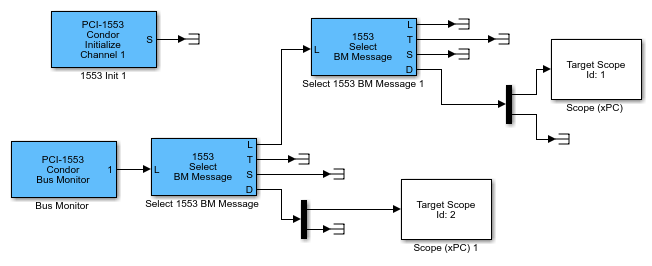

The following example uses PCI-1553 blocks. It describes how you can use a Bus Monitor
in a model. The Bus Monitor operation outputs a list containing the messages seen on the
specified bus since the last time it was called. The BMSample model
shows how to set up a simple bus monitor that looks for the messages in the preceding
examples (RTSample, BCSample, and
RTBCSample).
You can run this example on a target computer that has a PCI-1553 board. If your target computer uses a different board, such as a QPCI-1553 board, replace the PCI-1553 blocks with the blocks for your board.

The PCI-1553 Initialize block configures a Bus Monitor on channel 1
of the board. This block also instructs the board to monitor bus A.
The PCI-1553 Bus Monitor block specifies a maximum of 10 messages
to receive in a list.
The 1553 Select BM Message block picks a message with specified
properties out of this list. The Message selection mode parameter of the block provides
a finite list of message properties. In this model, the selected property is
BC->RT or RT->BC.
The 1553 Select BM Message block has the following outputs:
L — Message list passed to other1553 Select BM Message
blocks. If this block is the only 1553 Select BM Message block in
your model, connect the signal to a terminator or ground.
T — Time that the board believes that the message was received on the bus. This time is the time, in microseconds, since the board was started, presented as a double. The clock can run at a slightly different rate than the model execution timer. Therefore, this time is likely different from the Simulink® Real-Time™ execution time.
S — Status information. This information contains seven
uint32 entries with status and command information.
D — A vector of 32 uint16 entries with the data from that message. This vector outputs 32 entries, even if only some of the entries are defined.